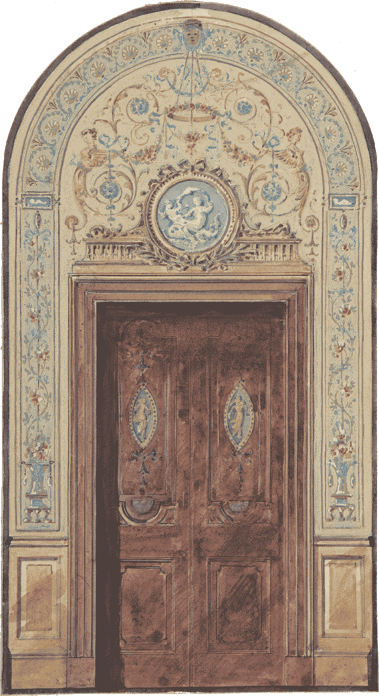
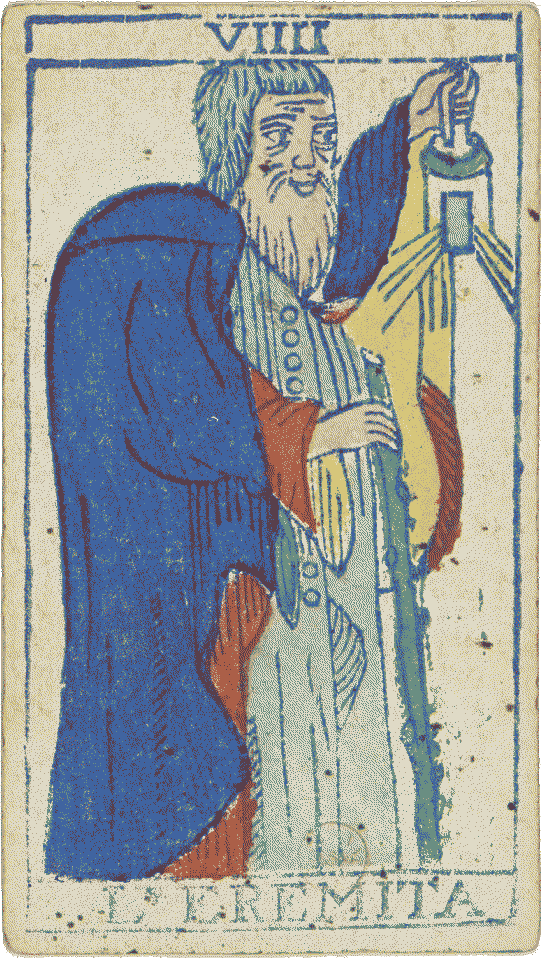

Ønskeliste
høre, du velsignede sjæl, du vandrer i decembers mørke! åbn dette HELLIGE skrin af ønsker, hvor i dets indre gemmer sig skatte og artifakter af den mest forunderlige art. det er på én gang en samling af jordiske begær, et relikvie sammensat af FROMME drømme, et manuskript indsvøbt i vintersolhvervets blege lys og prydet med advent-kransens gyldne skær. betragt disse folia efter behag, mens du vandrer gennem denne katalog af længsler.
dette HELLIGE skrin af ønsker er endnu under konstruktion! nedenfor findes de gaver, som indtil videre er åbenbaret for beskuelse.
-
Nøgleringe fra Ukrainekrigen
- SU-34 kampfly Page 1
- Ka-52 angrebshelikopter Page 2
-
Bøger
- The Timeless Way of Building Page 3
- The Deeds of Louis the Fat Page 4
- Edmund Morris's Theodore Roosevelt Trilogy Page 5
- Personal Memoirs of U.S. Grant Page 6
- Two Lives of Charlemagne Page 7
- The Thirty Years War Page 8
- Alexander of Macedon, 356-323 B.C. Page 9
-
Tøj
- Tilskud til en blazer Page 10
-
Teknologi
- Fiio k11 DAC/AMP (sort) Page 11
AN CCXXXII DE LA RÉPUBLIQUE. (2024 CE.)
denne kodex er baseret på et manuskript fra pseudepigraph.neocities.org (straight up yoinked that medieval drip)
denne kodex er baseret på et manuskript fra pseudepigraph.neocities.org (straight up yoinked that medieval drip)